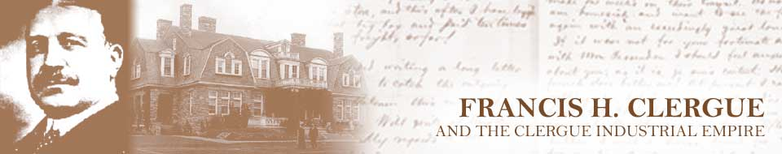

Home • Before Clergue • The Arrival • The Personality • Block House • Montfermier • Industrialization Process
Discovery Week • Collapse of the Empire • Rebirth • Clergue Letters
Rebirth
A committee to reorganize the Consolidated Lake Superior Company was formed in August of 1903 at the height of the Corporation’s financial difficulties. Although the Board of Directors had hoped to refinance the Company rather than reorganize it, they ultimately agreed to adopt the plan, which provided for the incorporation of a new holding company. The primary function of this new company was to raise enough money through the sale of bonds to repay Speyer and Company in full and still leave an adequate balance to provide the newly organized company with working capital.
In an unprecedented move, the shareholders did not ratify the reorganization plan despite the recommendation and request made by the Board of Directors. Similarly, Francis H. Clergue, who had been out of the country at the time the plan was proposed and developed, expressed skepticism about the plan’s potential for success. The plan needed a boost. The initial proposal -- to have the provincial government underwrite the securities of the new company – was weak and uninspired. It did, however, lead to the idea of a separate underwriting company to underwrite the bonds of the new holding company, an idea that lent credibility to the scheme.
Francis Clergue and Henry Hamilton among others incorporated the Canada Improvement Company in 1904. The primary functions of the Improvement Company were to underwrite the securities of the new company and to assist in any negotiations that may be entered into with the provincial and dominion governments. The position advanced by the Improvement Company was that if a loan application was not only guaranteed by the government but also secured by a commitment from an underwriting firm then a lending institution would be more predisposed to lend money.
|
Algoma Steel |
Spanish River Pulp and Paper Company |

The government co-operated by guaranteeing a loan in the amount of $2 million albeit with conditions. The Improvement Company agreed to complete and to operate the Algoma Central Railway, to redeem the securities held by Speyer, to repay or secure releases for the liabilities of each of the Allied Companies and to form a new company to hold all of the securities of the former Consolidated Lake Superior Company. The Improvement Company assured the government that the guaranteed loan would be repaid in a timely fashion and that the new company would have a minimum of $1 million in working capital. The government was given the right to appoint three directors to the Board in order to ensure that the conditions were satisfied and it had some say in the management of the new company.
The Reorganization Committee declared the plan to be operational in May, 1904. The next step taken was the incorporation of the Lake Superior Corporation pursuant to the laws of New Jersey and with its head office in Jersey City, New Jersey. As its final act, the Reorganization Committee executed a contract with Speyer and Company for the acquisition of all of Speyer’s interest in the Allied Companies. The creation of this new company and the buy out of Speyer marked the end of Philadelphia control over the industries at Sault Ste. Marie.
Stock in the newly-created Lake Superior Corporation was held by shareholders of the old Consolidated, by creditors of the Consolidated who accepted bonds and shares in settlement of their accounts and by the Canada Improvement Company. The Improvement Company purchased the securities of the Allied Companies of the old Consolidated held by Speyer and Company and, in turn, transferred them to the Lake Superior Corporation. Clergue took possession of the properties on behalf of the new Corporation and deposited the securities with the Morton Trust Company as security for a first mortgage.
The Lake Superior Corporation assumed control of each of the subsidiary companies at the end of May, 1904. C.D. Warren replaced Benjamin Fackenthal as both receiver and president of the companies on the Canadian side of the border. The subsidiary companies remained in receivership for several months following the takeover. The Power Company was granted a discharge in September, 1905 making it the last Canadian company to be released from bankruptcy. Once the Canadian companies were back on track, the Lake Superior Corporation took steps to regain control of one of the American subsidiaries. The Trans-St. Mary’s Traction Company received its discharge in bankruptcy in May, 1906 and control reverted to the Lake Superior Corporation. This left only the American Lake Superior Corporation in receivership. Unlike the bond holders of each of the other companies, the bondholders of the American Lake Superior Corporation refused to comply with the terms proposed by the Reorganization Committee and the Improvement Company resulting in an extended period of bankruptcy.

The Canada Improvement Company remained active following the completion of the reorganization. It continued to sell securities in an attempt to pay down the loan guaranteed by the government. The Improvement Company had an ulterior motive in repaying the government guaranteed loan at the earliest opportunity. Repayment relieved the government of its role as a supervisory agent and it eliminated the government’s contractual right to appoint three people to the Board of the Lake Superior Corporation. Dissention among members of the Board divided the Board into two distinct camps. One side consisted of the Government appointed Board members, President Warren and Board members who represented Philadelphia investors while the other consisted of representatives of New York financial interests, Clergue and the Canada Improvement Company. The schism continued to widen until an all out war for control erupted in 1907.
The rift among members of the Board dated back to the 1904 reorganization. The Canada Improvement Company had acquired a large number of shares in the Lake Superior Corporation on the understanding that they would sell the shares for the benefit of the Corporation. When the newly formed corporation needed cash to meet its financial obligations, the Canada Improvement Company didn’t press the sale of the shares. Instead, it pledged the shares as security to obtain money from bankers in Philadelphia. Several members of the Board, including the president and the government appointees expressed displeasure with this move and regarded it as yet another act of fiscal irresponsibility and shortsightedness on the part of Clergue. They feared that when the notes matured in June, 1906 the Lake Superior Corporation would not have the funds to pay them. They were correct in their thinking. The loans created a debt burden that threatened to once again destroy Sault Ste. Marie’s industrial base. Ultimately, the Corporation obtained an extension of the loan until June, 1907.
Between 1904 and 1906, the Canada Improvement Company had been voting the shares pledged as security giving the Improvement Company control of the management of the Lake Superior Corporation. When the loan from the Philadelphia banks came due in June, 1907, they agreed to renew the loan on the condition that the banks assumed voting rights associated with the shares pledged by way of collateral. The directors who had allied themselves with Clergue and the Canada Improvement Company were angered by the manipulative actions of the banks and applied for an injunction to prevent the bankers from taking seats on the Board and from voting. The case dragged on in the courts for months before there was a final decision in favour of the Philadelphia bankers. Some of the directors resigned in protest and others were dismissed in favour of the appointees of the banks. Clergue was not nominated as a director at the Annual Meeting of Shareholders thereby losing his seat on the Board.
The Canada Improvement Company continued as a legal entity until July of 1908. Because the Company had not made any arrangements for the payment of outstanding notes and other debts, all of the pledged securities were sold at auction. Securities valued at approximately $6,500,000 were purchased for $1,592,712. Unpledged securities were disposed of soon thereafter. Clergue’s attempt to regain control of the industries at Sault Ste. Marie had been thwarted for the final time.